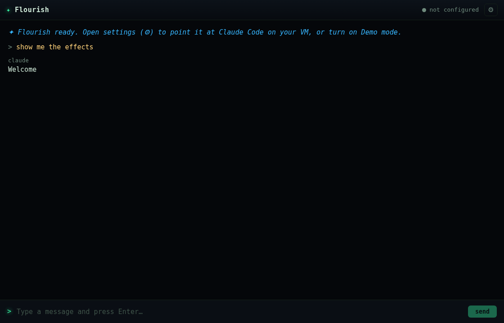
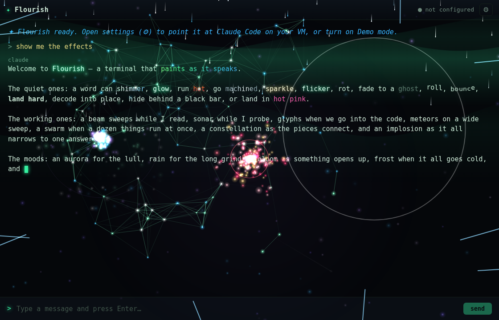
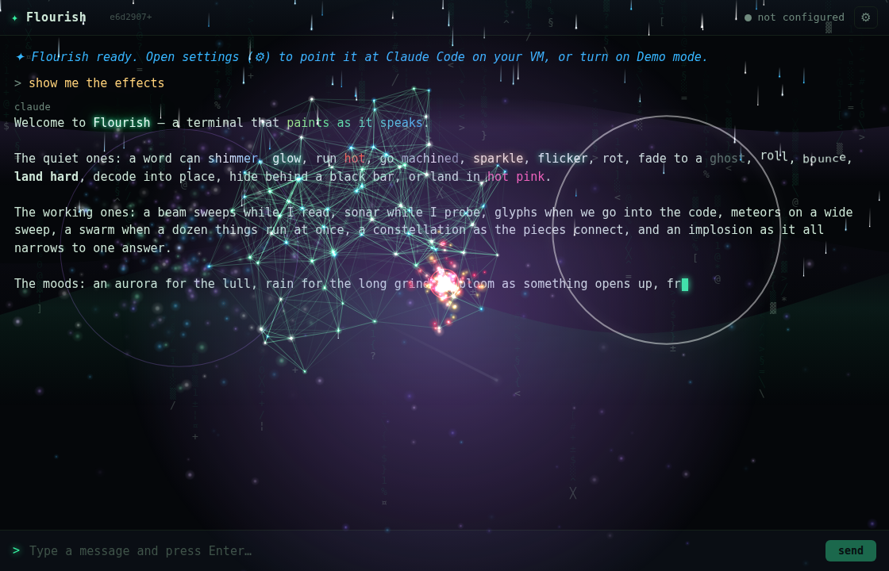

Jim, on the last two packaged builds: "even in demo mode I say 'show me the effects' and I just see 'claude', and I still can't type in the prompt box between prompts."
Both halves were literally true, and they turned out to be the same defect. The word claude he could see wasn't a reply at all — it's the label the renderer puts above each assistant line (renderer.js:79). He was looking at an empty assistant line with its label and nothing under it.
The tests were no help, and that was the first real clue:
| Check | Result on the broken build |
|---|---|
npm test | 88/88 pass — it only covers the pure modules (parser, bridge, scroller). None of them load the renderer. |
npm run screenshot | Wrote a PNG and exited 0 — a screenshot of the wreckage is still a screenshot. |
So I reproduced it headlessly instead of reading code. npm run screenshot renders the exact demo showcase, and the PNG showed the whole bug on its own: the reply stops dead at Welcome — the word immediately before the showcase's first {{fx:neon}} directive.

"Welcome to {{fx:neon}}Flourish{{/fx:neon}} — a terminal that…". It renders Welcome, then stops at the first directive. The claude above it is the line label, which is exactly what Jim was describing.That pinned the failure to the first directive. Loading the real renderer over the real preload and capturing the renderer console gave the rest immediately:
[console:3] Uncaught TypeError: str.indexOf is not a function (renderer.js:278)
at microFx (renderer.js:278:13)
at appendText (renderer.js:288:5)
at appendInto (renderer.js:233:12)
at emitRuns (renderer.js:264:7)
at appendText (renderer.js:292:5) <-- appendText, twice, in one stack
at applyEvents (renderer.js:297:28)
at step (renderer.js:377:9) <-- the typewriter's rAF loop
DOM state: { "inputDisabled": true, "renderedText": "…claude\nWel" }
appendText appearing twice in one stack at two different line numbers is the whole story.
renderer.js declared two different functions with the same name in the same scope:
line 186: function appendText(tgt, s) // low-level: merge s into tgt's trailing text node line 287: function appendText(str) // high-level: micro-effects + auto-styling
Function declarations hoist, so the later declaration wins for the entire scope — silently, with no error. Every call meant for the low-level one:
softInto(): appendText(tgt, ch) // line 206 appendInto(): appendText(tgt, str) // line 233
…actually invoked appendText(str), handing a DOM element to a parameter named str. microFx() called str.indexOf('!') on it and threw. (It also made appendInto and appendText mutually recursive, which would have been the next problem.)
The throw happened inside the typewriter's requestAnimationFrame loop, and that is what turned one bad call into two user-visible bugs:
step() never scheduled its successor. Text stopped where it stopped.finalizeAssistant() never ran, so setBusy(false) never ran → input.disabled stayed true forever.activeLine stayed non-null, and sendMessage() opens with if (!t || activeLine) return; → every subsequent prompt was silently refused, even if the input had been typeable.Plain text worked right up until the first effect directive, which is why demo mode looked alive for exactly one word. The {{fx:}} directive is what opens a style span and routes text through the per-char path into appendInto.
The one-line fix was never in question — rename the low-level function to appendRaw. The real decision was what to do about the fact that this shipped twice. I put four iteration options to Jim; he took two:
| Option | Decision |
|---|---|
| Live-reload the UI from the VM — the app loads its renderer over HTTP from the working tree, so a UI change is Ctrl-R, not a 148MB rebuild → download → extract. | Taken |
| Version stamp — stamp each build with its git SHA and show it in the titlebar. | Taken |
Browser F5 loop — serve src/ with a shim faking window.api, iterate in Chrome with no Electron at all. | Not taken — live-reload covers it with better fidelity |
5.4MB app.asar drop-in instead of the 148MB zip. | Not taken for now — still the only path that covers main.js/prompt.js changes |
The smoke test wasn't optional and wasn't offered as a choice: without it the same class of bug ships again on the next build.
appendRaw(tgt, s) — the low-level text-node merger is renamed, with a comment saying why the name must stay distinct. Callers at the two sites updated. That is the entire behavioural fix.tools/smoke.js (npm run smoke) — drives the real renderer, over the real preload, with the real demo stream, and fails on: any uncaught renderer error, raw {{fx:}} leaking as text, a reply that doesn't land whole, or an input that never re-enables. prepackage:win runs it, so a broken build can no longer be packaged.tools/stamp.js (npm run stamp) — writes the git SHA into src/build-info.js + build-info.json; the titlebar shows it. Generated, never committed.main.js loads the renderer from devUrl / FLOURISH_DEV_URL when set; Ctrl-R and F12 bound explicitly (hiding the menu bar took the default reload accelerator with it). nginx serves /flourish/ no-store, behind tailnet-only.conf.Only the UI moves to the VM. The SSH bridge, the private-key handling and the system prompt all stay in the packaged main process, so a live UI can never widen what the app is able to do.
The test that matters is that the new guard fails on the code that shipped. Re-introducing the duplicate name and running it:
FAIL - renderer logs no errors
Uncaught TypeError: str.indexOf is not
a function (renderer.js:281)
FAIL - input is re-enabled after the reply
ok - no raw {{fx:}} directives leak
FAIL - the whole reply lands, first to last
FAIL - renders: "The quiet ones"
FAIL - renders: "The working ones"
FAIL - renders: "a nova"
FAILED (9) — smoke
ok - renderer logs no errors
ok - input is re-enabled after the reply
ok - no raw {{fx:}} directives leak
ok - the whole reply lands, first to last
ok - renders: "The quiet ones"
ok - renders: "The working ones"
ok - renders: "a nova"
PASSED — smoke
| Check | Result |
|---|---|
npm run smoke (packaged files) | 10/10 · exit 0 |
npm run smoke -- --url=http://100.76.34.62/flourish/ (what the app actually loads) | 10/10 · exit 0 |
npm test | 88/88 (unchanged — it never saw this bug and still doesn't) |
nginx /flourish/ from the tailnet IP | 200 · Cache-Control: no-store |
nginx /flourish/ from 127.0.0.1 — cloudflared's origin | 403 — not reachable from the public tunnel |
Effect vocabulary (npm test) | 50/50 taught by prompt.js — the repo was always consistent; the drift was the build |

neon, rainbow, shimmer, ghost), point effects firing, and the prompt box re-enabled and focused at the bottom.
e6d2907+, top-left). + means uncommitted changes were in the tree when it was stamped. When the UI is served live off the VM it reads ui <sha> · app <sha> · live — two genuinely different commits, which is the point: the .exe embeds a copy of src/ and prompt.js, so "what the repo says" and "what you're running" drift silently. A session once verified 40 effects against a build whose prompt.js predated the other 10.'use strict' doesn't, and there's no linter here. A linter with no-redeclare would have caught it for free, and is the obvious next cheap win.requestAnimationFrame callback kills the loop, not the app. The UI half-dies and keeps running, which is why it presented as two unrelated cosmetic bugs rather than a crash.npm run screenshot cheerfully captured the broken app twice. It's a viewing tool; it now sits behind a guard that actually asserts.